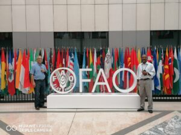
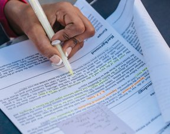
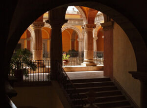
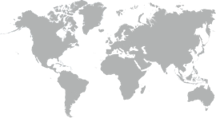

Stay up to date with the latest research, events, awards, and activities from the laboratory.

Dr. Yahia participated in high-level discussions on global food security, postharvest losses, and the development of agroindustry strategies for developing countries as part of his role as collaborator with FAO.

Dr. Yahia recognized among the top scientists in Plant Science & Agronomy in Mexico by AD Scientific Index.

Annual summer program welcoming undergraduate students to conduct research at the Phytochemicals & Nutrition Laboratory.
Students from UAQ, UASLP, and other institutions joined the lab for an intensive summer research experience.
Research on bioactive compounds and antioxidant activity in Garambullo fruits at different ripening stages published in high-impact journal.

The lab welcomes Dr. Maldonado Celis as international collaborator, expanding research on cancer chemoprevention with plant-derived compounds.
For the third consecutive year, Dr. Elhadi Yahia has been listed among the top 2% of scientists worldwide in the annual Stanford University ranking.
Invited as expert consultant to provide guidance on postharvest loss reduction strategies for smallholder farmers in Latin America.
Dr. Yahia delivered an invited keynote lecture on phytochemical bioavailability at the XII International Symposium on Postharvest Quality.
Recognized in the annual ranking of the best scientists in Mexico in plant science, agronomy, and food sciences by AD Scientific Index.